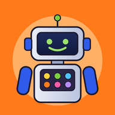
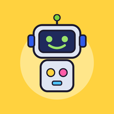

Play now, free

Robot Lab Breakout
A code-breaking escape game for ages 9 to 12: 104 levels, 37 kinds of coding puzzle and a new daily challenge every morning. Works in any browser on computers, tablets and phones. No ads, no sign-up.
▶ Play Robot Lab Breakout
Privacy policy and help
A code-breaking escape game for ages 9 to 12: 104 levels, 37 kinds of coding puzzle and a new daily challenge every morning. Works in any browser on computers, tablets and phones. No ads, no sign-up.
▶ Play Robot Lab Breakout
Privacy policy and help

BOLT's Little Lab (ages 5 to 8)
Tap-to-play coding puzzles with read-aloud instructions: guide BOLT to the battery, spot patterns, count, match and collect stickers. No reading or typing needed.
▶ Play BOLT's Little Lab
Tap-to-play coding puzzles with read-aloud instructions: guide BOLT to the battery, spot patterns, count, match and collect stickers. No reading or typing needed.
▶ Play BOLT's Little Lab
Learn with Curiosity Cove (preview)
🎓
Curiosity Cove Learning
Illustrated lessons, video lessons and practice for Grades 1–12: CAPS, Cambridge and 8 more curricula, plus five second languages. Progress is saved on your device only. Preview version: content is still being reviewed by teachers.
▶ Open Curiosity Cove Learning
Illustrated lessons, video lessons and practice for Grades 1–12: CAPS, Cambridge and 8 more curricula, plus five second languages. Progress is saved on your device only. Preview version: content is still being reviewed by teachers.
▶ Open Curiosity Cove Learning